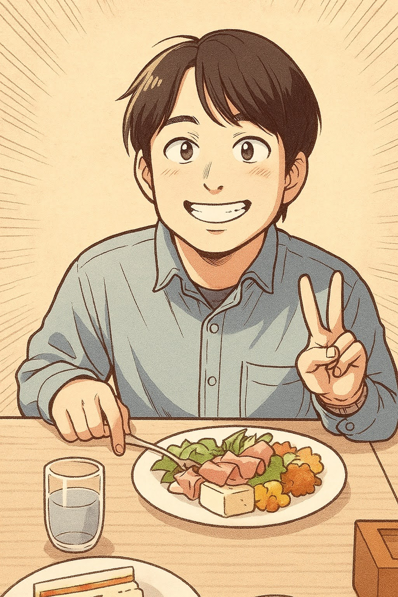

プロフィール
このサイトについて
『Begin Path』管理人の ねこはち といいます。 もともと散歩や読書が趣味でしたが、PC遊びにハマりだし、 ChatGPTを使いながらちょっとしたプログラムづくりなどをやり始めてから その成果物を形に残したいと考えるようになりました。 それ以外にも、コラムなんかも自由にアップして 趣味の世界を形に残そうとサイトを立ち上げました。 「お金をかけずともこんなにおもしろいことができるんだぜ」という そんな価値観を発信していきたいと思っています。
サイトはCMSを使っておらず、HTMLとCSSをいじる100%手作りです。 それもChatGPTに大いに助けてもらっています。 このサイトそのものが私の創作物です。
ざっくり自己紹介
- 名前：ねこはち
- 生年：1985年
- 血液型：O型
- 出身：関東
- 職業：秘密だ。会社員だ。非IT系だ。
- 趣味：ミニアプリづくり、散歩、読書
- 使用環境：Ubuntu／iPhone／ChatGPTヘビーユーザー